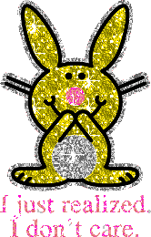
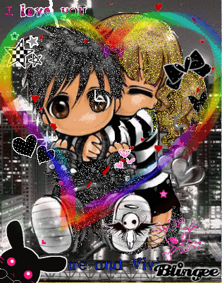

About
Glitter Editor is a browser-based graphics editor for making and remixing glitter graphics, GIFs, pixel art, stickers, text, and other kinds of web graphics.
Glitter graphics are animated graphics characterized by looping sparkle and glitter effects applied to text, illustrations, or photographs. Popular online throughout the , they served as a means of personalizing early social media profiles and personal websites.
The editor lets you make them using assets sourced from GeoCities, Angelfire, and Tripod archives, or images you upload yourself. Inspired by editors like Blingee (–), it gives you more control over where and how glitter is applied, whether by selecting colors from an image, painting it by hand, or using it in text, shapes, borders, and shadows. Glitter fills, stickers, text, shapes, and filters remain editable as layers while you arrange, transform, and animate your work before exporting it as a GIF or MP4.
It grew out of my interest in the visual culture of the old web: the graphics people made, the tools they used, and the ways all of it is being preserved and reinterpreted now. This page covers what you can make with it, why I built it, what shaped it, and what I'm trying to do with it.
For the history of glitter graphics themselves, see History. For the personal-web culture they grew out of, see Personal Web. For the broader preservation story and a chronology of the platforms that shaped the personal web, see Preservation.
What You Can Make
- Glitter fills. Apply animated glitter to selected image colors, or paint your own mask by hand.
- Text and shapes. Editable type and vector shapes, each with its own glitter, solid, or gradient fill, plus border and shadow.
- Stickers. Layer in included graphics, or upload your own images and animated GIFs.
- Filters. Stack Instagram-style presets and other adjustments; each filter layer reprocesses everything beneath it, so effects combine as you stack them. Pixelate, Posterize, and Dither filters give retro looks.
- Auto Glitter.Beta Turn a photo's own colors into real animated glitter.
- Projects and exports. Save an editable project, or export the finished animation as a GIF or MP4.


This Website
This website started as a personal project to collect and preserve glitter graphics, and to build a simple tool for making new ones. At first the editor was mostly just that: a way to put glitter on an image. But I kept building on it, and somewhere along the way it turned into a much more complete graphics editor.
I'm a graphic designer, so as I've used it myself I've kept adding the kinds of tools and control I want when I'm making something. It now has a full layer system, typography and drawing tools, image editing, filters, painting, project files, and an export system. Glitter is still at the heart of it, but it's become one material among many rather than the whole point.
What I don't want is for it to turn into just another generic graphics editor. Everything still runs through the lens of the internet I grew up with: glitter graphics, pixel art, GIFs, stickers, photo filters, dithering, strange fonts, and all the other little pieces of visual culture that piled up online over the years. The tools can be modern and pretty sophisticated without anything you make with them needing to look polished or contemporary.
A lot of the thinking behind the project overlaps with the indie web and the renewed interest in making the internet personal, strange, and handmade again. Preservation is part of it, but I don't want to preserve these assets by putting them behind glass. I want to preserve them by keeping them useful. Personal websites were often built by taking a little from here, a little from there, and curating those pieces into something that reflected the person who made it. Some creators made graphics specifically for other people to use and pass around, usually with credit or a link back. Others circulated so widely that their original source has been lost. Most were made for the web as it existed at the time, with little reason to imagine that people would still be finding and using them twenty years later. I want this site to keep that material in circulation and give people the tools to do something new with it.
All glitters and stickers are ethically sourced from GifCities[1] and the now-defunct Angelfire and Tripod. Angelfire and Tripod finally shut down for good in , but I'd started pulling resources off them weeks before they went dark. Original file names are kept wherever possible.
Beyond these sources and the few personal hosting services still standing, plenty has been lost to time, and more disappears every year. Even where archived pages survive, the accompanying images often weren't preserved, leaving only fragments of these sacred artifacts to rediscover and reconstruct here.
Privacy Policy
Images loaded into this application and exported stay in your browser and aren't uploaded or saved anywhere else. Analytics are used to see general, anonymous traffic patterns (page views, rough usage counts) out of personal curiosity. This site uses GoatCounter, which sets no cookies, stores nothing on your device, and doesn't collect your IP address or build a profile of you. No images, files, or direct personal details are collected or stored by this site.
Version History
You're using version 0.6.0.
Added path drawing, area selections, canvas cropping and text editing, expanded animation timing and playback, introduced SVG import and export, and rebuilt the workspace around one Library window.
- added Added the Pen and Line tools and Path layers: draw straight or curved paths, lines, and arrows, edit their points, and give each a glitter or color stroke, fill, and outline. Show me
- added Added the Select Area tool: draw rectangles, ellipses, freehand or polygon lassos, pick colors with the Magic Wand, select layer pixels, preview Expand/Contract/Border/Smooth, undo and reselect areas, and turn them into Path layers. Fill, Erase, Crop, Brush and Glitter Fill all use the area. Show me
- added Added the Crop tool with canvas handles, aspect ratios, extension fill, keyboard and touch controls, and one-step undo. Fit the canvas to artwork, its motion, selected layers, a selected area, trimmed transparent edges, or hidden artwork. Show me
- added Added SVG import as editable Path layers, with supported outlines grouped by paint. Files using unsupported features open as images, with the reason shown in the status line. Show me
- added Added Animation loop controls for an automatic or custom document length, a table of animation sources, Fit animations to loop, Restore previous timing, and Set loop to include content. Saved timing can be restored after reopening a project. Show me
- added Added Scene preview with Play/Pause, a scene-time slider, frame stepping, and a return to the loop start. Pausing holds the current time, and playback controls work with the timeline closed and on phones. Show me
- changed Expanded motion timing with start times, cycle lengths, finite repeat counts, Trim end, and Stretch duration. Changing presets keeps the timing, and travel motions also show their speed in pixels per second. Show me
- added Added Appears and Disappears times to show a layer for only part of the animation, including layers without motion. Show me
- added Added GIF Cycle controls for animated stickers, frame images, and the Base Image, so their animation can play faster, slower, or fit the document loop. Show me
- added Added Start at for animated stickers, frame images, the Base Image, and glitter textures, and Randomize GIF starts for a selection, so copies of one GIF no longer blink in lockstep. Show me
- added Animated GIFs opened as the Base Image now play on the canvas and in exports, with a Play animation switch in Canvas Properties. Auto Glitter is unavailable while they play. Show me
- changed Marquee now fits the canvas and loops seamlessly, with a choice of no repeat, an edge wrap, or a tiled row with an adjustable gap. Added looping Ricochet and Wander for layers and Sparkles. Show me
- added Added animated Scanlines crawl and a Hue Cycle filter that rotates the colors of the artwork beneath it, with matching playback and export. Show me
- added Added the Timeline on desktop, with draggable timing bars, snapping, zoom, output-frame markers, and export-frame playback. Open it from the Timeline button in the top bar or the View menu. Select several bars to move, align, stagger, fit, reset, or paste timing together in one undo step. Show me
- added Added Stagger animations for a multi-selection: each layer's motion starts one step after the last, in reading order, so split letters wave, bounce, or pop in one by one. Show me
- added Added Custom motion with editable keys and easing, conversion from supported presets, and desktop canvas controls for posing position, rotation, and scale keys. Show me
- added Added canvas text editing and drag-to-create text boxes, with Point, Auto Height, and Fixed sizing, overflow feedback, and Fit box to text. Show me
- added Expanded text formatting with color emoji, justified alignment, underline, strikethrough, symbols, alternating caps, plain-text paste, and splitting text into characters, words, or lines. Show me
- added Added l33t, ｆｕｌｌｗｉｄｔｈ, and ᴛɪɴʏ ᴄᴀᴘꜱ text styles, a Wrap menu for decorations like xX_name_Xx and ~*~name~*~, and a Kaomoji tab beside the symbols. Show me
- added Added stacked text orientation, with stacked looks and paper and stone textures in the WordArt style gallery. Show me
- added Added two-color Pattern paints for fills, outlines, shadows, text backgrounds, and the canvas background, with presets, transparent backgrounds, motif shapes, tile layouts, spacing, offsets, and looping scroll. Show me
- added Added editable Subtitle, Caption Bar, and Date Stamp templates, plus a Demotivational Poster canvas template. Show me
- added Added clipping to show artwork only inside the layer below, following its opacity and animation. Show me
- added Filter layers can now be unlocked, moved, and resized to apply a look to a rectangular region instead of the whole canvas. Show me
- added Added stretchable stickers and frames, which protect their corners and edges as they resize, with Smart Stretch and adjustable Border Scale for frame images. Show me
- added Added Remove background for uploaded stickers, turning a PNG or JPG into a cutout, and a glitter recolor tool with a side-by-side comparison of the original and recolored glitter. Show me
- added Added SVG export for paths, shapes, text, painted fills, style frames, and non-image backgrounds, keeping gradients, patterns, strokes, arrowheads, outlines, shadows, and bevels. Text can be outlined or editable; glitter becomes a solid color, and the dialog reports omitted content. Show me
- added Added Export Size and File Size Limit to Export Settings, plus a Fit button in the result to export again under a service's upload limit. Presets include Mastodon and emoji, sticker, and icon sizes; fitting leaves the saved Export Settings unchanged. Show me
- changed Improved animated export to preserve GIF and glitter frame changes at their authored times and protect distinct source frames when reducing the output. Show me
- changed Expanded animation analysis and frame options to explain source timing, loop fitting, and ways to export fewer frames. Export now reports its progress step by step, and long-running work shows an activity indicator on the canvas. Show me
- changed Rebuilt the workspace around one Library window for glitters, stickers, shapes, fonts, and brushes, with a right column that shows only the properties of the selected layer or active tool. Show me
- changed Reorganized the glitter and sticker libraries by style and set, with adjustable tile sizes, quick picks, broader search, and clearer source and creator details. Added new fonts, glitters, and sparkle sets. Show me
- changed Redesigned the phone layout around a chip bar for the selected layer's properties. Show me
- changed Redesigned New Canvas, Settings, Export Settings, and Commands & Shortcuts as titled cards, with resets for a single setting, a group, or everything. Show me
- added Added automatic recovery of unsaved work: if the page closes or crashes, the start screen offers to resume your last graphic. Show me
- added Added Take Photo to the start screen and the menu: start a graphic from a camera photo, with mirroring, a camera choice, and a countdown. Show me
- added Added one-click canvas presets to the start screen, recent custom sizes in New Canvas, and template previews that open at their own size. Show me
- added Added Balance Sidebar Widths to keep the Inspector aligned with the toolbar and Layers panel, and smoother value scrubbing for numeric controls. Show me
- added Double-click or double tap a layer to open its source, and see dimensions while drawing a Shape, Text box, or Line. Show me
- added Expanded multi-selection with show/hide, lock/unlock, shared blend modes, matching widths or heights, flipping each layer in place, and copying the active layer's appearance to unlocked layers of the same type. Show me
- added Drag across eye icons in the Layers panel to show or hide several layers in one undo step, including on touch screens. Show me
- changed Layer locks now block canvas transforms and property changes while leaving the layer selectable. Show me
- changed Improved startup with deferred Library views and settings, a smaller boot bundle, and on-demand loading for export and background removal.
- fixed Improved Undo and Redo so text typing stays in its editing session, fill clicks make one step, unfinished drags cancel cleanly, and restoring history keeps the active tool.
- fixed Fixed text anchoring and box resizing, sticker aspect locking, and sticker outline, shadow, and bevel sizing at different scales.
- fixed Fixed importing and thumbnailing older library GIFs whose frames extend beyond their declared image size.
- fixed Fixed the context bar not appearing for the active tool when a document starts.
Saves project files in format version 6.
Added layer animation, filter, frame, and Sparkles layers, richer layer styling, still-image export, and more faithful animation output.
- added Added stackable Animation to Glitter Fill, Sticker, Text, and Shape layers, with presets for ambient movement, attention effects, motion, rainbow color, and one-time transitions. Show me
- added Added Filter layers that non-destructively process every layer beneath them, with adjustment, Instagram, Web & Film, and Pixel & Damage looks including light leaks, scanlines, dreamy glow, JPEG crunch, RGB split, and gradient maps. Show me
- changed Moved the canvas Pixelate and Palette effects into Pixelate, Posterize, and Dither filter layers, which can now process any layers beneath them. Projects that used them open with an equivalent filter layer above the canvas. Show me
- added Added Frame layers with classic web borders or ornate frame images, glitter, solid, and gradient paint, and the option to follow the canvas or transform freely. Show me
- added Added animated Sparkles to layers and the canvas, with presets for glints, stars, hearts, snow, edge tracing, and Kira Kira highlights. A standalone Sparkles layer can also place weather and particles over the complete scene. Show me
- added Added one-click Style presets for Text, Shape, and Sticker layers, along with Bevel & Gloss effects and glitter or solid Sticker outlines. Show me
- added Added backgrounds to Text layers, with glitter or solid fills, presets, adjustable padding and corners, and layouts for individual lines, text bounds, or the complete text box. Show me
- added Added Text warp presets for arcs, arches, circles, bulges, waves, and flags, with adjustable bend. Show me
- added Added image fills for Shape layers, with fit, scale, alignment, offset, and pixelated or smooth sampling controls. Show me
- added Added still-image export as PNG, JPG, or GIF, with a choice of the first or current animation frame and optional generational JPG recompression. Show me
- changed Rebuilt animation export planning so generated motion and animated assets share a deliberate render clock, close their loops more cleanly, and preserve authored GIF timing. Show me
- added Added layer blend modes including Multiply, Screen, Overlay, Difference, Hue, Color, and Luminosity. Show me
- added Added a movable anchor point for each layer, controlling the point used for rotation, flipping, scaling, and animation. Show me
- added Added a Crop to Artwork canvas sizing mode that trims or extends the canvas to match the artwork, with adjustable padding. Show me
- added Added ready-made gradient presets and an eyedropper for sampling colors directly from the artwork. Show me
- changed Expanded export results and animation analysis with clearer timing, frame reduction, optimization, and output details. Show me
- changed Improved GIF color selection for better gradients and overall palette quality. Show me
- fixed Fixed transparency edges and color sampling accuracy in GIF exports. Show me
- added Added source and license attribution for brushes, fonts, and stickers in their asset details.
- added Added Twitter's 2016 sticker collection. Show me
- changed Improved sticker sharpness by automatically using higher-resolution source art when a sticker is scaled up. Show me
- changed Expanded the site history into a searchable timeline and moved it into its own History section.
- added Added a Preservation section describing how stickers, glitters, and site history are kept available long-term.
- changed Gave each layer type its own default glitter, so a new Fill Layer, Text, Shape, and Background no longer all start on the same one.
- fixed Fixed still-image exports on iOS showing sharing instructions meant for animated exports. Show me
Saves project files in format version 6.
Added imported brush tips with scatter and jitter, rebuilt the settings sidebar, and expanded export dithering and navigation.
- changed Redesigned every Properties and tool panel with consistent sections, compact controls, collapsible asset and effect cards, clearer empty states, and inline reverts for changed settings. Show me
- added Added imported tips from archived Photoshop brush packs, with a searchable, categorized gallery for choosing them. Show me
- added Added Scatter & Jitter controls for each brush, including scatter distance, dabs per stamp, size and angle jitter, and roundness and flip for imported tips. Show me
- changed Combined the Brush and Eraser into one Mask Brush with separate Paint and Erase settings. Erase strokes now tint the area removed so far. Show me
- added Added GIF Look presets and detailed dithering controls for palette size, pattern, strength, scale, edge protection, and stable or shimmering motion, with a live preview. Show me
- fixed Fixed color shifts in fixed-palette GIF exports by sharing one palette across the animation. Show me
- added Added trackpad pinch-zoom and two-finger panning, scrubby zoom with the Zoom tool, Space-drag and middle-button panning, and Zoom to Selection. Commands & Shortcuts now includes a Canvas Gestures reference. Show me
- added Expanded the gradient editor with stop snapping, reversing, duplication, keyboard controls, and adjustable smooth blending. Show me
- added Added opacity controls for multi-selected layers, including support for mixed opacity values. Show me
- changed Made Layer Opacity work consistently across every layer type, fading the complete layer while keeping fill, border, and shadow opacity independent. Show me
- changed Expanded Mask Brush sizes to 1,000 px and made the size slider easier to control across its full range. Imported tips now remember their own size and spacing, with edge antialiasing available directly in Mask Settings. Show me
- added Added resizable Layers and Design sidebars that snap to useful widths and remember what you set. Show me
- added Added an optional watermark on exports, with a choice of marks. Show me
- changed Made the context toolbar draggable, so you can move it out of the way and it stays where you put it. Show me
- changed Improved pixel art handling, so pixelated stickers stay crisp on the canvas and in every export instead of being smoothed. Show me
- changed Improved touch handling with palm rejection, so a resting hand no longer joins a pinch gesture. Show me
- added Added adjustable corner rounding to Square shapes. Show me
- changed Improved gallery and modal search, keeping group headings and pinned rows visible while filtering. Show me
- changed Improved the Layers panel with clearer reorder handles and better keyboard access. Show me
- changed Renamed Glitter Fill layers to Fill Layers, since they can also use solid and gradient fills. Show me
- changed Renamed the color selection sliders to Color Tolerance and Edge Feather, so their names say what they do. Show me
- changed Regrouped export settings into Output, Playback, Quality, and Optimization. Show me
- fixed Fixed a new sticker picking up the color adjustments left over from the previously selected one. Show me
Saves project files in format version 2.
Added saveable projects, video export, generated glitter, and canvas-wide effects.
- added Added saveable .glitter.json projects that keep layers, masks, and custom stickers editable when reopened. Show me
- added Added MP4 export alongside animated GIF. Show me
- added Added Auto Glitter, which reads an image and builds glitter layers from it. The results stay editable, and you can reopen a batch to adjust it. Show me
- added Added canvas-wide pixel effects, including pixelation, posterization, dithering, and animated shimmer. Show me
- added Added a Base Background layer that fills the canvas behind everything with an image, glitter, gradient, solid color, or transparency. Show me
- added Added gradient sources across fills, borders, shadows, and canvas backgrounds, with multiple stops and adjustable angle. Show me
- added Added editable shadows to Sticker layers, with independent source, offset, scale, opacity, and color adjustments. Show me
- added Added multi-select with shared transforms, alignment, and distribution for arranging several layers together. Show me
- changed Rebuilt layer transforms with steadier scaling, smart guides, snapping to the canvas and other layers, and consistent behavior across layer types. Show me
- added Added document scaling, so you can resize the whole composition and everything on it at once. Show me
- added Added copy and paste for selected layers, along with support for pasting images from the clipboard. Show me
- changed Reorganized the settings sidebar around the selected layer, with a context toolbar for the active tool. Show me
- added Added the Shape gallery for browsing and placing preset shapes. Show me
- added Added bold and italic styles for Text layers. Show me
- added Added a collection of light and dark interface themes. Show me
- added Added color adjustment for stickers, letting you recolor artwork to match a palette. Show me
- added Added search and filtering across the sticker, glitter, and shape galleries, with faster on-demand loading. Show me
- added Added an Antialias Edges setting for smoother text, shape, and mask edges. Show me
- added Added optimization details to the export preview, showing frame reduction and loop closure. Show me
- changed Improved mobile gestures, drawers, and layer reordering. Show me
- fixed Fixed animated stickers flickering in the preview.
Saves project files in format version 1.
Expanded the editor beyond color-selected glitter fills with painted masks, text, and shapes.
- added Added brush and eraser tools for editing Glitter Fill masks by hand, with adjustable size, spacing, and smoothing. Show me
- added Added editable Text layers with typography, layout, fill, border, and shadow controls. Show me
- added Added editable Shape layers with fill, border, and shadow controls. Show me
- added Added point and area text, so a text layer can grow with its content or wrap inside a fixed box. Show me
- added Added a library of self-hosted display fonts for Text layers. Show me
- added Added canvas size controls for changing the document dimensions after you start. Show me
- added Added a gallery picker for choosing a glitter, replacing the small swatch list. Show me
- changed Unified mouse and touch input, so pointer behavior is the same on desktop and mobile. Show me
- added Added confirmation prompts before actions that discard work.
- changed Renamed the Color Picker tool to Color Fill to match what it does. Show me
Added mobile editing, blank canvases, and in-app guidance, then refined touch controls and asset details.
- added Added a mobile layout with drawer panels and touch controls. Show me
- changed Rewrote touch handling so tapping, dragging, pinch-zoom, and transforms behave predictably on phones and tablets. Show me
- added Added blank canvas creation and preset base images for starting without an upload. Show me
- added Added the built-in guide and contextual hints based on the active tool and selected layer. Show me
- added Added custom sticker uploads for bringing in your own artwork. Show me
- added Added transform handles for scaling and rotating stickers directly on the canvas. Show me
- added Added asset details for stickers and glitters, including original source, dimensions, and frame rate. Show me
- added Added a welcome screen introducing the editor to first-time visitors.
- changed Replaced the main settings inputs with sliders for quicker adjustment.
The first public release of the layer-based glitter graphics editor.
- added Added Glitter Fill layers for applying animated fills to selected image colors. Show me
- added Added Sticker layers and a browser for the archived sticker collection. Show me
- added Added layer management with move, scale, rotate, duplicate, reorder, and visibility. Show me
- added Added animated GIF export with transparency options, size warnings, and automatic frame reduction. Show me
About Me
I've had unsupervised internet access since I was six, back when that was still weird and freakish. The internet was an endless sandbox for me, and growing up inside it shaped the mental model I still use to understand and make things.
I think spatially, like ideas live on a two-dimensional plane: things I can pick up, move around, take apart, examine, combine, and put back together differently. A flat canvas still feels like a space to me, somewhere I can move through, arrange things, build things, and in some sense exist. I learned very young to treat digital things the same way.
The internet reinforced that. Websites were collections of interconnected pages you moved through, and enough pages together could become their own little world. Graphical chat spaces like The Palace[2][3][4] made that literal: the internet as a series of two-dimensional rooms you could move between, decorate, build for, and inhabit with other people. A flat image could be a room, a pile of rooms could be a world, a pile of pages could be somewhere to explore. The line between an image, an interface, and a space never felt particularly solid to me.
Graphics, fonts, code, and images never felt fixed or untouchable. They felt like materials. I could pull things apart to see how they worked, make websites, build whole worlds, and teach myself whatever I needed to make the things I wanted to exist. I learned to understand things by messing with them, and to create by modifying and connecting whatever was already lying around.
As the internet went from a strange little subculture to a commercialized space everyone uses, I've watched a lot of what I grew up with disappear. Everything here comes from my own experience and my own observations as it changed. I was there in the 90s, saving images, downloading fonts, making ugly graphics, and viewing the source of websites I liked, and I'm still doing all of that today.
This editor comes directly out of the way I grew up making things online. Give me a pile of graphics and somewhere to put them, and I'll figure out the rest. That's what I want to hand other people: a pile of materials and a place to play with them, pull them apart, put them together differently, and make their own ugly little things.
If you have any questions, comments, or concerns, you can find my contact information on my personal website.
This editor is free, has no ads, and doesn't collect anything from you. If it made you something you like, you can buy me a coffee on Ko-fi.
References
Background removal runs locally using ONNX Runtime Web (MIT) and the ISNet model from chenjindu (Apache-2.0).
- "GifCities". Internet Archive.
- Greenwood, Melicia. "The Origin of Cartoon Dollz". Shattered Innocents. Archived from the original on .
- "The Palace". Archived from the original on .
- Carpenter, Nicole (). "On "The Palace," you can be anyone you want to be". The Outline.